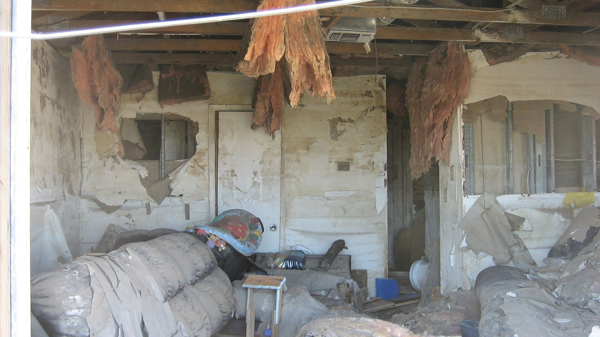

Often yes, when the damage was sudden and accidental, like a burst supply line, a failed water heater or an AC overflow. Often no, when it came from a slow leak, rising floodwater without a flood policy, or a sewer backup without the right endorsement. Here's how Florida policies usually handle each case for Fort Myers homeowners.
Call 239-356-3708 answered 24/7
Florida Water Damage Insurance: What Fort Myers Owners Need to Know
- Sudden and accidental water damage is usually covered; long-term seepage, wear and tear and flood are common exclusions.
- Report a new claim within one year of the date of loss under Florida law, but start drying and document everything right away.
- For policies issued on or after January 1, 2023, you can't sign your insurance benefits over to a contractor after a loss.
- This page is general information, not legal advice. Your policy wording decides your coverage.
What Florida homeowners insurance usually covers, and what it doesn't
| What happened | Often covered? | Why |
|---|---|---|
| Burst supply line or pipe inside the home | Usually, for the resulting damage | Sudden and accidental |
| AC overflow from a clogged drain line | Often, for the resulting damage | Sudden discharge; the AC repair itself usually isn't covered |
| Washing machine, dishwasher or water heater failure | Usually, for the resulting damage | Sudden appliance failure |
| Roof leak after wind damage in a storm | Often | Wind-created opening; hurricane deductible may apply |
| Roof leak from an old, worn roof | Often excluded | Wear and tear |
| Slow leak under a sink or behind a wall for weeks | Often excluded | Gradual or repeated seepage |
| Rising floodwater or storm surge | Not under homeowners | Needs a separate flood policy |
| Sewer or drain backup | Only with a water backup endorsement | Commonly excluded otherwise |
| Cast iron drain that corroded | Pipe usually excluded; resulting damage sometimes covered | Wear and tear vs sudden failure |
| Mold | Often limited or capped | Mold sublimits are common |
See typical repair prices on the water damage cost guide.
Sudden vs gradual: the rule behind most decisions
Most Florida water claims turn on one question: did the water escape suddenly, or did it leak over time?
Sudden and accidental: a supply line bursts, a water heater fails, an AC pan overflows. These are the losses policies are built to cover.
Gradual, continuous or repeated: a slow drip under a sink, a shower pan leaking into the subfloor for months, a cast iron drain seeping under the slab. Many policies exclude this.
Report the date you discovered the damage truthfully, and don't guess at how long it was leaking. Let the inspection, the plumber's report and moisture readings show what happened.
Flood is not water damage under your homeowners policy
Standard Florida homeowners policies do not cover flooding, meaning surface water that rises from outside, such as storm surge, overflowing canals or heavy rain flooding the ground.
Flood insurance comes from the National Flood Insurance Program (NFIP) or a private flood insurer.
New NFIP policies usually have a 30-day waiting period before coverage starts, so buying one when a storm is already forecast is usually too late.
Wind-driven rain that enters through a storm-damaged roof or window is usually a homeowners claim, while rising water is a flood claim. After hurricanes, adjusters often have to separate the two.
See flood and storm cleanup for what to do after rising water.
Sewer and drain backups
Water and sewage that back up through a toilet, tub or floor drain are often excluded from standard policies unless you added a water backup or sewer backup endorsement. Check your declarations page. If you have it, it usually carries its own limit. See sewage backup cleanup.
Condo owners: HO-6 and the association
Under Florida Statute 718.111(11), the condo association's policy generally covers the building as originally installed, and unit owners generally insure their own floor, wall and ceiling coverings, fixtures, appliances, water heaters, cabinets, countertops and personal property, usually with an HO-6 policy. If the leak came from another owner's unit, that owner's insurer may also be involved. See condo water damage.
Florida's assignment of benefits change
An assignment of benefits (AOB) let homeowners sign their insurance benefits over to a contractor, who then billed the insurer directly. For residential and commercial property policies issued on or after January 1, 2023, Florida law bars assigning post-loss benefits. In practice:
- Your contract for repairs is between you and the contractor.
- Your insurer pays under your policy, often with checks made out to you and sometimes to your mortgage company.
- Be cautious with any contractor who asks you to sign over your benefits.
Florida claim deadlines
New claim: notice must be given within one year of the date of loss.
Reopened claim: also within one year of the date of loss.
Supplemental claim for additional costs on the same loss: within 18 months of the date of loss.
These are outer limits. Most policies also require prompt notice, so report a water loss as soon as you can.
What your insurer has to do, and how fast
Florida law, Statute 627.70131, also puts deadlines on the insurance company for residential property claims:
- 7 calendar days to acknowledge your claim communication.
- 7 days to begin investigating after it receives your proof-of-loss statements.
- 60 days after notice of the claim to pay or deny it, unless factors beyond its control prevent it.
Keep a log of every call, email and adjuster visit, with dates. If deadlines slip, the log is your record.
If you have to leave home while it dries
Many homeowners policies include additional living expense or loss of use coverage, which can pay for a hotel, meals and other extra costs if a covered loss makes your home unlivable. Sewage, a flooded kitchen or the only bathroom out of service are common reasons. Keep every receipt, and ask your adjuster before booking a long stay.
Deductibles and limits to check
All other perils (AOP) deductible: the usual deductible for leaks and appliance failures.
Hurricane deductible: often a percentage of your dwelling coverage, applied to hurricane-caused damage.
Water damage sublimits or separate deductibles: some Florida policies cap non-weather water losses.
Mold limit: often a small fixed amount.
Tear-out coverage: some policies pay to open walls or floors to reach a broken pipe, even when the pipe itself isn't covered. See cast iron pipe water damage.
How to protect your water damage claim
- Stop the water and make it safe. Use the first-hour water damage checklist.
- Photograph and video everything before cleanup: the source, every wet room, damaged belongings.
- Take reasonable steps to prevent more damage. Most policies require it. Emergency water removal and drying count.
- Keep damaged materials or photos of them, and a list of damaged belongings.
- Get moisture readings and drying logs. Structural drying records show what was wet and when it was dry.
- Keep the repair invoice for the cause, from the plumber, roofer or HVAC technician. It shows what failed.
- Report the claim promptly and write down your claim number and adjuster's name.
- Ask for written estimates before work beyond emergency extraction.
If your water damage claim is denied or underpaid
Read the letter closely for the exact policy language the insurer relied on.
Ask for the adjuster's report and any engineer or plumber reports.
Send what's missing: photos, plumber reports, moisture logs, receipts.
Florida's mediation program: the Florida Department of Financial Services runs a mediation program for many residential property claim disputes.
Appraisal: many policies have an appraisal clause for disputes about the amount of the loss.
Public adjusters: public adjusters negotiate claims for a fee. Florida caps their fees at 10% of payments for claims from a declared emergency in the first year, and 20% for other claims.
Attorney: for coverage disputes, talk with a Florida property insurance attorney.
Seasonal and vacant homes
Many policies limit some coverage when a home is vacant or unoccupied for a set period. Home watch reports and normal utility records help show when damage happened. See water damage in vacant homes.
Questions about water damage insurance in Florida
Does homeowners insurance cover a burst pipe in Florida?
Usually yes for the water damage the burst causes, such as wet drywall, flooring and cabinets. The cost to repair the pipe itself may not be covered.
Does insurance cover AC leak water damage?
Often for sudden overflows that damage ceilings, walls and floors. The AC repair itself usually isn't covered, and leaks that ran for weeks may be excluded as gradual. See AC leak water damage.
Is mold from a water leak covered?
Sometimes, usually up to a mold limit, and usually only when the mold came from a covered water loss.
How long do I have to file a water damage claim in Florida?
Florida law requires notice of a new claim within one year of the date of loss, and supplemental claims within 18 months. Your policy may require faster, prompt notice.
Can a restoration company bill my insurance directly in Florida?
Not through an assignment of benefits on policies issued on or after January 1, 2023. Your contract is with the contractor, and your insurer pays under your policy.
Should I call my insurance or a restoration company first?
Stop the water first, then start drying and report the claim as soon as you can. Waiting for the adjuster before drying usually makes the damage worse.
Who can help me document water damage for an insurance claim in Fort Myers?
We record photos, moisture readings and drying logs as the work is done. For Fort Myers, Cape Coral, Lehigh Acres, Estero and Bonita Springs, call 239-356-3708, answered 24/7.
Will my insurance go up if I file a water damage claim?
It can. Insurers may look at claims history at renewal, and water claims are watched closely in Florida. Ask your agent before filing a small claim close to your deductible.
Can my insurance company choose who dries my home?
You can usually choose your own restoration company. Some policies include a managed repair program, so read your policy and ask your insurer how it works before agreeing to anything.
My insurer says the leak was gradual, not sudden. What now?
Ask for the denial in writing with the policy language it relies on. Gather what shows when the leak started, such as the plumber's report on the failed part, photos, moisture readings and water bills. You can request mediation through the Florida Department of Financial Services, and you can talk to a public adjuster or attorney before you accept the decision.
Water damage and an insurance claim to file?
Stop the water, photograph everything and start drying. Documentation from day one makes the claim easier.
Call 239-356-3708 answered 24/7